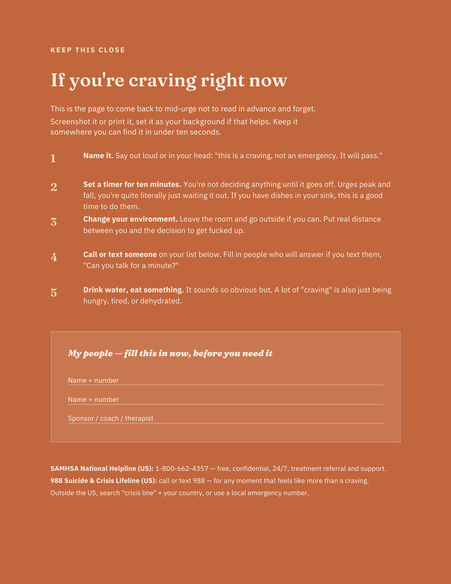
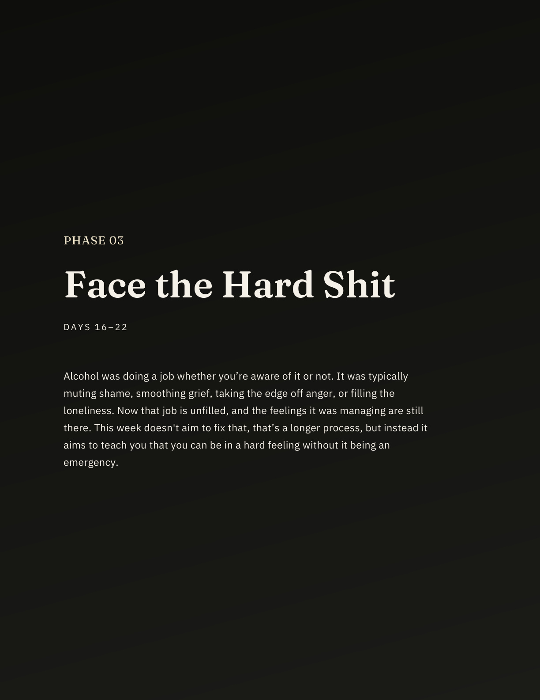
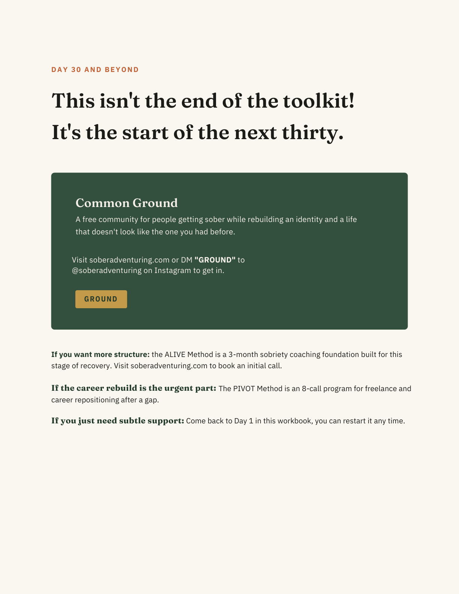

Four phases across thirty days
Each day includes one grounding idea, two reflection prompts, and one 5–10 minute action. It is made to be the opposite of overwhelming.
A Sober Adventuring Toolkit
A day-by-day toolkit for the first thirty days sober.
Created to make early sobriety a bit less uncomfortable and, dare I say, exciting. Thirty days of small, specific prompts and actions for the part where you know you want to stop, but you do not want another cold clinical checklist.
Digital download. Yours to keep, print, or fill in on-screen.

This is for you if
You are committed to showing up for the process for 30 days.
You are up Googling sobriety-related things at 1am instead of sleeping.
You are over rehab-brochure language, generic printable checklists, and advice that sounds good but does not help at 8pm.
Inside you will receive
Each day includes one grounding idea, two reflection prompts, and one 5–10 minute action. It is made to be the opposite of overwhelming.
Built for the moment you do not have thirty minutes to read a PDF. Save it, print it, or keep it close before you need it.
Identity, career, gap scripts, and a 90-day re-entry plan for when the fog clears and the bigger life questions show up.
Workbook preview
The First Thirty gives you one page per day: a clear idea, prompts that make you tell the truth, and one tiny action you can finish even on a bad day.



By day 30, you’ll have
Not a vague feeling of “doing better,” but written answers showing what actually shifted.
A plan you have already practiced at least once, before you need it most.
You will have practiced naming the moments that used to end in a drink, thirty separate times.
Built from what you now know about yourself instead of a guess.
Why this
This is not polished recovery language written from a distance. It is emotional and practical support for the first month sober, built by someone with lived experience and professional experience.
This toolkit is not medical advice and is not a substitute for professional care. If you have been drinking heavily or daily, stopping suddenly can be medically dangerous. Talk to a doctor before or as you stop.
Instant digital download
Yours to keep, print, fill in on-screen, and revisit for as many rounds of thirty as you need.